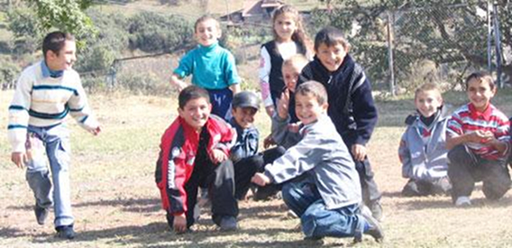

РЕБЯТА, Я ЧЕСТНО СКАЖУ!
Ребята, я честно скажу! Когда читал репортаж Алекпера Алиева про путешествие в Ереван, особенно последнюю часть, представлял себя на его месте и плакал, потому что нас разлучили так, что раньше и во сне бы не приснилось. Очень грустно и очень драматично. В Шеки, где я жил, было большое армянское кладбище, очень аккуратное, ухоженное. Я помню, когда армяне начали покидать Шеки, они перед тем как уехать, приходили на кладбище, чтобы попрощаться с могилами своих близких. Расскажу вам одну историю.
У этого кладбища росло много кизиловых деревьев. Тогда мне было 12-13 лет мы с друзьями ходили туда за кизилом. В то время говорили, что армяне – опасные люди, к ним нельзя приближаться, а если позовут, надо сразу убегать домой или подальше, потому что они нас могут убить. Ясное дело, мы были маленькие - верили этому и очень боялись. И вот в такое время мы пошли собирать кизил около армянского кладбища. Я и мой друг, взяв каждый по ведру, тихо, стараясь быть незаметными собирали кизил. Вдруг услышали приближающиеся шаги. Мы испугались и спрятались.
Подглядывая я увидел несколько мужчин, женщин и двоих детей, один был совсем маленький, 3-4 лет, а второй почти мой ровесник. Короче, они плакали. Женщина говорила мальчикам: Посморите вот ваш отец, это могила вашего отца, мы прощаемся с ним надолго, но когда нибудь вернемся, обещаю. Давай, попращайся с папой. И все они плакали. Я очень эмоциональный человек и не сдержался, тоже заплакал. Женщина услышала мой голос и испугалась. Я как понял, что они меня услышали, хотел убежать. Взрослый мужчина-армянин позвал меня, а мой друг кричал, не иди, они тебя убьют, они армяне... и такое всякое фуфло гонял. А мне бежать было некуда, сказал сам себе, если на самом деле хотят меня убить, все равно поймают и убьют! Я подошел к ним. Тот дядя медленно погладил мою голову и сказал: Сынок, посмотри, этот парень, его зовут (имя уже не помню), его отец умер и покинул своего сына, от него только эта могила осталась, когда этот парень скучает по отцу, он приходит сюда, но после этого уже ничего не будет напоминать его отца, ничего не останется кроме воспоминаний, его могилу он больше не увидит, он уезжает из этого города, и если честно, его заставляют покинуть родной дом, покинуть все, что у него было на свете. Это делают плохие люди! Да, я знаю, что у вас в школе говорят всю эту чепуху, что мы убийцы, мы плохие, а разве мы сделали что-то плохое до этого, а откуда вдруг взяли, что мы убийцы, мы враги... Зачем? Сказал и заплакал и глядя мне в глаза сказал: Помни, сынок, будет время когда наши народы будут жить дружно, но никто не сможет вернуть нам жизни, которые мы будем тратить на пустые амбиции! Иди сынок, будь счастлив, и дай бог, когда ты вырастешь, накажешь тех, кто нас разлучил!
Я был в шоке и обо всем этом рассказал учителю на следующий день, во время урока. За это получил наказание и до конца урока стоял в углу. Уже прошло 13 лет, но до сих пор не могу забыть того дядю, и того парня, который прощался с могилой своего отца, и когда вспоминаю их, ненавижу этот мир, я ненавижу все, презираю этот мир полностью!
27 июня 2006 года
Дата публикации: 01-06-08
У этого кладбища росло много кизиловых деревьев. Тогда мне было 12-13 лет мы с друзьями ходили туда за кизилом. В то время говорили, что армяне – опасные люди, к ним нельзя приближаться, а если позовут, надо сразу убегать домой или подальше, потому что они нас могут убить. Ясное дело, мы были маленькие - верили этому и очень боялись. И вот в такое время мы пошли собирать кизил около армянского кладбища. Я и мой друг, взяв каждый по ведру, тихо, стараясь быть незаметными собирали кизил. Вдруг услышали приближающиеся шаги. Мы испугались и спрятались.
Подглядывая я увидел несколько мужчин, женщин и двоих детей, один был совсем маленький, 3-4 лет, а второй почти мой ровесник. Короче, они плакали. Женщина говорила мальчикам: Посморите вот ваш отец, это могила вашего отца, мы прощаемся с ним надолго, но когда нибудь вернемся, обещаю. Давай, попращайся с папой. И все они плакали. Я очень эмоциональный человек и не сдержался, тоже заплакал. Женщина услышала мой голос и испугалась. Я как понял, что они меня услышали, хотел убежать. Взрослый мужчина-армянин позвал меня, а мой друг кричал, не иди, они тебя убьют, они армяне... и такое всякое фуфло гонял. А мне бежать было некуда, сказал сам себе, если на самом деле хотят меня убить, все равно поймают и убьют! Я подошел к ним. Тот дядя медленно погладил мою голову и сказал: Сынок, посмотри, этот парень, его зовут (имя уже не помню), его отец умер и покинул своего сына, от него только эта могила осталась, когда этот парень скучает по отцу, он приходит сюда, но после этого уже ничего не будет напоминать его отца, ничего не останется кроме воспоминаний, его могилу он больше не увидит, он уезжает из этого города, и если честно, его заставляют покинуть родной дом, покинуть все, что у него было на свете. Это делают плохие люди! Да, я знаю, что у вас в школе говорят всю эту чепуху, что мы убийцы, мы плохие, а разве мы сделали что-то плохое до этого, а откуда вдруг взяли, что мы убийцы, мы враги... Зачем? Сказал и заплакал и глядя мне в глаза сказал: Помни, сынок, будет время когда наши народы будут жить дружно, но никто не сможет вернуть нам жизни, которые мы будем тратить на пустые амбиции! Иди сынок, будь счастлив, и дай бог, когда ты вырастешь, накажешь тех, кто нас разлучил!
Я был в шоке и обо всем этом рассказал учителю на следующий день, во время урока. За это получил наказание и до конца урока стоял в углу. Уже прошло 13 лет, но до сих пор не могу забыть того дядю, и того парня, который прощался с могилой своего отца, и когда вспоминаю их, ненавижу этот мир, я ненавижу все, презираю этот мир полностью!
27 июня 2006 года
Дата публикации: 01-06-08
ОТ РЕДАКТОРА
Уже скоро месяц у нас на сайте опубликованы 10 сочинений-писем. Зона комментариев пока пуста. Не все, но некоторые из них, хотят, чтобы откликнулся кто-то, хотят продолжить разговор.
Этот рассказ тоже отклик. Нашла его на одном из форумов два года назад, на обсуждении серии статей, написанных Алекпером Алиевым после его первой поездки в Ереван. Об авторе не знаю ничего. Буду рада если он напишет мне на info@southcaucasus.com.
Все сочинения, письма собраны здесь
Уже скоро месяц у нас на сайте опубликованы 10 сочинений-писем. Зона комментариев пока пуста. Не все, но некоторые из них, хотят, чтобы откликнулся кто-то, хотят продолжить разговор.
Этот рассказ тоже отклик. Нашла его на одном из форумов два года назад, на обсуждении серии статей, написанных Алекпером Алиевым после его первой поездки в Ереван. Об авторе не знаю ничего. Буду рада если он напишет мне на info@southcaucasus.com.
Все сочинения, письма собраны здесь
Кавказский Центр Миротворческих Инициатив
© Ассоциация Текали - info@southcaucasus.com